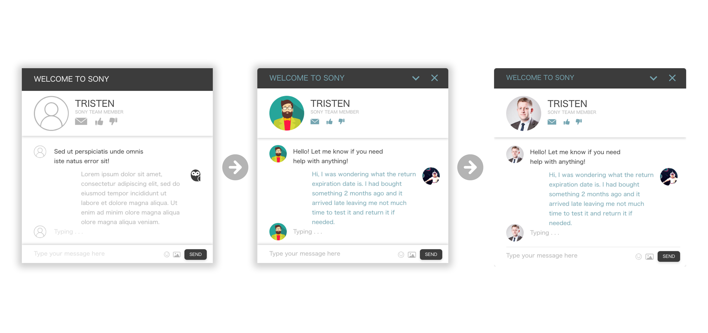
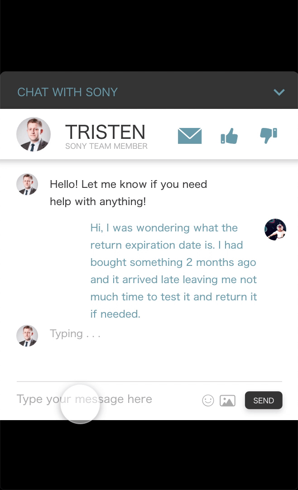

Design & Prototype
The palette used for this UI harnessed the technological appeal of dark greys and blues but, as stated before, the interface needed to occupy a complimentary color. We went with white to create that distinction between the webpage and the chat box.

User Flow
The user flow, while seeming meager, is important to establish the specs of the interaction.
Upon clicking the bottom chat bar, the box will ease up at a 0.5s rate.
This rate became a standard and was also used for the ease out, the mobile interaction and the keybord implementation on the mobile.

